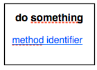

Main calls
This is a particular kind of calls which perform entirely an action within the diagram flow, rather than being used. Thus, the diagram they are associated to could be inserted in the "mother-diagram".
annotation
//$ <call> do something
code line
code line with method that performs the action //$
code line
representation in the diagram

The user should have the option to open the hyperlink in a new window (double-click of mouse)
OR
open the hyperlink in the same diagram inside the work flow (right-click and select ‘open in diagram’)